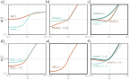
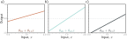
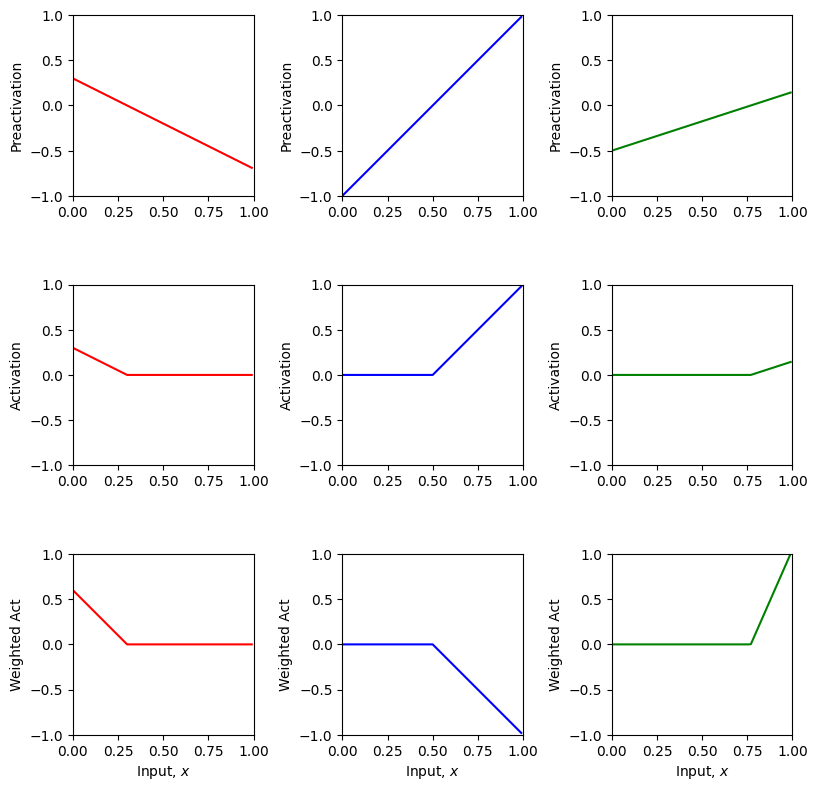
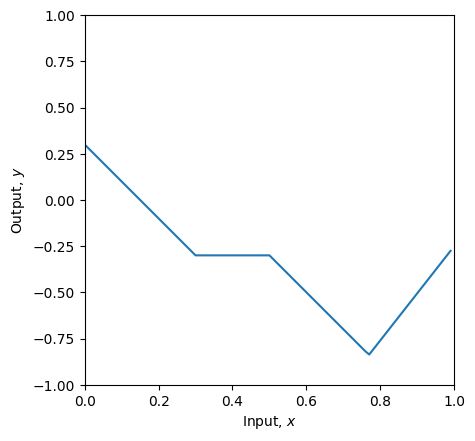

# Imports math library
import numpy as np
# Imports plotting library
import matplotlib.pyplot as pltActivations
\[\begin{eqnarray}\label{eq:snn_harswish} \mbox{HardSwish}[z] = \begin{cases} 0 & \quad z <-3 \\ z(z+3)/6 & \quad -3\leq z\leq 3 \\ z &\quad z>3 \end{cases}. \end{eqnarray}\]
\[\begin{eqnarray} \mbox{ReLU}[\alpha \cdot z] = \alpha \cdot \mbox{ReLU}[z]. \end{eqnarray}\]
\[\begin{eqnarray} \mbox{heaviside}[z] = \begin{cases} 0 & \quad z <0 \\ 1 & \quad z\geq 0\end{cases} \hspace{2cm} \mbox{rect}[z] = \begin{cases} 0 & \quad z < 0 \\ 1 & \quad 0 \leq z\leq 1 \\ 0 & \quad z > 1\end{cases}. \end{eqnarray}\]

Activation functions. a) Logistic sigmoid and tanh functions. b) Leaky ReLU and parametric ReLU with parameter 0.25. c) SoftPlus, Gaussian error linear unit, and sigmoid linear unit. d) Exponential linear unit with parameters 0.5 and 1.0, e) Scaled exponential linear unit. f) Swish with parameters 0.4, 1.0, and 1.4.

Processing in network with one input, three hidden units, and one output for problem 3.4. a–c) The input to each hidden unit is a linear function of the inputs. The first two are the same as in figure 3.3, but the last one differs.
# Plot the shallow neural network. We'll assume input in is range [0,1] and output [-1,1]
# If the plot_all flag is set to true, then we'll plot all the intermediate stages as in Figure 3.3
def plot_neural(x, y, pre_1, pre_2, pre_3, act_1, act_2, act_3, w_act_1, w_act_2, w_act_3, plot_all=False, x_data=None, y_data=None):
# Plot intermediate plots if flag set
if plot_all:
fig, ax = plt.subplots(3,3)
fig.set_size_inches(8.5, 8.5)
fig.tight_layout(pad=3.0)
ax[0,0].plot(x,pre_1,'r-'); ax[0,0].set_ylabel('Preactivation')
ax[0,1].plot(x,pre_2,'b-'); ax[0,1].set_ylabel('Preactivation')
ax[0,2].plot(x,pre_3,'g-'); ax[0,2].set_ylabel('Preactivation')
ax[1,0].plot(x,act_1,'r-'); ax[1,0].set_ylabel('Activation')
ax[1,1].plot(x,act_2,'b-'); ax[1,1].set_ylabel('Activation')
ax[1,2].plot(x,act_3,'g-'); ax[1,2].set_ylabel('Activation')
ax[2,0].plot(x,w_act_1,'r-'); ax[2,0].set_ylabel('Weighted Act')
ax[2,1].plot(x,w_act_2,'b-'); ax[2,1].set_ylabel('Weighted Act')
ax[2,2].plot(x,w_act_3,'g-'); ax[2,2].set_ylabel('Weighted Act')
for plot_y in range(3):
for plot_x in range(3):
ax[plot_y,plot_x].set_xlim([0,1]);ax[plot_x,plot_y].set_ylim([-1,1])
ax[plot_y,plot_x].set_aspect(0.5)
ax[2,plot_y].set_xlabel('Input, $x$');
plt.show()
fig, ax = plt.subplots()
ax.plot(x,y)
ax.set_xlabel('Input, $x$'); ax.set_ylabel('Output, $y$')
ax.set_xlim([0,1]);ax.set_ylim([-1,1])
ax.set_aspect(0.5)
if x_data is not None:
ax.plot(x_data, y_data, 'mo')
for i in range(len(x_data)):
ax.plot(x_data[i], y_data[i],)
plt.show()# Define a shallow neural network with, one input, one output, and three hidden units
def shallow_1_1_3(x, activation_fn, phi_0,phi_1,phi_2,phi_3, theta_10, theta_11, theta_20, theta_21, theta_30, theta_31):
pre_1 = theta_10 + theta_11 * x
pre_2 = theta_20 + theta_21 * x
pre_3 = theta_30 + theta_31 * x
# Pass these through the ReLU function to compute the activations as in
# figure 3.3 d-f
act_1 = activation_fn(pre_1)
act_2 = activation_fn(pre_2)
act_3 = activation_fn(pre_3)
w_act_1 = phi_1 * act_1
w_act_2 = phi_2 * act_2
w_act_3 = phi_3 * act_3
y = phi_0 + w_act_1 + w_act_2 + w_act_3
# Return everything we have calculated
return y, pre_1, pre_2, pre_3, act_1, act_2, act_3, w_act_1, w_act_2, w_act_3# Define the Rectified Linear Unit (ReLU) function
def ReLU(preactivation):
activation = preactivation.clip(0.0)
return activation# Now lets define some parameters and run the neural network
theta_10 = 0.3 ; theta_11 = -1.0
theta_20 = -1.0 ; theta_21 = 2.0
theta_30 = -0.5 ; theta_31 = 0.65
phi_0 = -0.3; phi_1 = 2.0; phi_2 = -1.0; phi_3 = 7.0
# Define a range of input values
x = np.arange(0,1,0.01)
# We run the neural network for each of these input values
y, pre_1, pre_2, pre_3, act_1, act_2, act_3, w_act_1, w_act_2, w_act_3 = \
shallow_1_1_3(x, ReLU, phi_0,phi_1,phi_2,phi_3, theta_10, theta_11, theta_20, theta_21, theta_30, theta_31)
# And then plot it
plot_neural(x, y, pre_1, pre_2, pre_3, act_1, act_2, act_3, w_act_1, w_act_2, w_act_3, plot_all=True)

Sigmoid activation function
The ReLU isn’t the only kind of activation function. For a long time, people used sigmoid functions. A logistic sigmoid function is defined by the equation
\[ f[z] = \frac{1}{1 + \text{exp}[-10z]} \]
(Note that the factor of 10 is not standard – but it allow us to plot on the same axes as the ReLU examples)
# Define the sigmoid function
def sigmoid(preactivation):
# TODO write code to implement the sigmoid function and compute the activation at the
# hidden unit from the preactivation. Use the np.exp() function.
activation = np.zeros_like(preactivation);
return activation
# Make an array of inputs
z = np.arange(-1,1,0.01)
sig_z = sigmoid(z)
# Plot the sigmoid function
fig, ax = plt.subplots()
ax.plot(z,sig_z,'r-')
ax.set_xlim([-1,1]);ax.set_ylim([0,1])
ax.set_xlabel('z'); ax.set_ylabel('sig[z]')
plt.show()theta_10 = 0.3 ; theta_11 = -1.0
theta_20 = -1.0 ; theta_21 = 2.0
theta_30 = -0.5 ; theta_31 = 0.65
phi_0 = 0.3; phi_1 = 0.5; phi_2 = -1.0; phi_3 = 0.9
# Define a range of input values
x = np.arange(0,1,0.01)
# We run the neural network for each of these input values
y, pre_1, pre_2, pre_3, act_1, act_2, act_3, w_act_1, w_act_2, w_act_3 = \
shallow_1_1_3(x, sigmoid, phi_0,phi_1,phi_2,phi_3, theta_10, theta_11, theta_20, theta_21, theta_30, theta_31)
# And then plot it
plot_neural(x, y, pre_1, pre_2, pre_3, act_1, act_2, act_3, w_act_1, w_act_2, w_act_3, plot_all=True)You probably notice that this gives nice smooth curves. So why don’t we use this? Aha… it’s not obvious right now, but we will get to it when we learn to fit models.
Heaviside function
Heaviside function is defined as
\[ H(x)= \begin{cases} 0, & z < 0, \\ 1, & z \geq 0. \end{cases} \]
# Define the heaviside function
def heaviside(preactivation):
# TODO write code to implement the heaviside function and compute the activation at the
# hidden unit from the preactivation. Depending on your implementation you may need to
# convert a Boolean array to an array of ones and zeros. To do this, use .astype(int)
activation = np.zeros_like(preactivation);
return activation# Make an array of inputs
z = np.arange(-1,1,0.01)
heav_z = heaviside(z)
# Plot the heaviside function
fig, ax = plt.subplots()
ax.plot(z,heav_z,'r-')
ax.set_xlim([-1,1]);ax.set_ylim([-2,2])
ax.set_xlabel('z'); ax.set_ylabel('heaviside[z]')
plt.show()theta_10 = 0.3 ; theta_11 = -1.0
theta_20 = -1.0 ; theta_21 = 2.0
theta_30 = -0.5 ; theta_31 = 0.65
phi_0 = 0.3; phi_1 = 0.5; phi_2 = -1.0; phi_3 = 0.9
# Define a range of input values
x = np.arange(0,1,0.01)
# We run the neural network for each of these input values
y, pre_1, pre_2, pre_3, act_1, act_2, act_3, w_act_1, w_act_2, w_act_3 = \
shallow_1_1_3(x, heaviside, phi_0,phi_1,phi_2,phi_3, theta_10, theta_11, theta_20, theta_21, theta_30, theta_31)
# And then plot it
plot_neural(x, y, pre_1, pre_2, pre_3, act_1, act_2, act_3, w_act_1, w_act_2, w_act_3, plot_all=True)This can approximate any function, but the output is discontinuous, and there are also reasons not to use it that we will discover when we learn more about model fitting.
Linear Activation functions
Neural networks don’t work if the activation function is linear. For example, consider what would happen if the activation function was:
\[ lin[z] = a + bz \]
# Define the linear activation function
def lin(preactivation):
a =0
b =1
# Compute linear function
activation = a+b * preactivation
# Return
return activation# TODO
# 1. The linear activation function above just returns the input: (0+1*z) = z
# Before running the code Make a prediction about what the ten panels of the drawing will look like
# Now run the code below to see if you were right. What family of functions can this represent?
# 2. What happens if you change the parameters (a,b) to different values?
# Try a=0.5, b=-0.4 Don't forget to run the cell again to update the function
theta_10 = 0.3 ; theta_11 = -1.0
theta_20 = -1.0 ; theta_21 = 2.0
theta_30 = -0.5 ; theta_31 = 0.65
phi_0 = 0.3; phi_1 = 0.5; phi_2 = -1.0; phi_3 = 0.9
# Define a range of input values
x = np.arange(0,1,0.01)
# We run the neural network for each of these input values
y, pre_1, pre_2, pre_3, act_1, act_2, act_3, w_act_1, w_act_2, w_act_3 = \
shallow_1_1_3(x, lin, phi_0,phi_1,phi_2,phi_3, theta_10, theta_11, theta_20, theta_21, theta_30, theta_31)
# And then plot it
plot_neural(x, y, pre_1, pre_2, pre_3, act_1, act_2, act_3, w_act_1, w_act_2, w_act_3, plot_all=True)